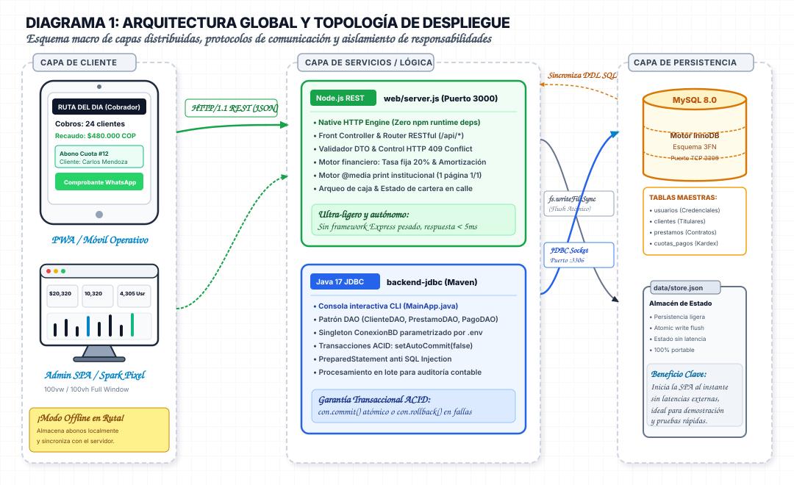
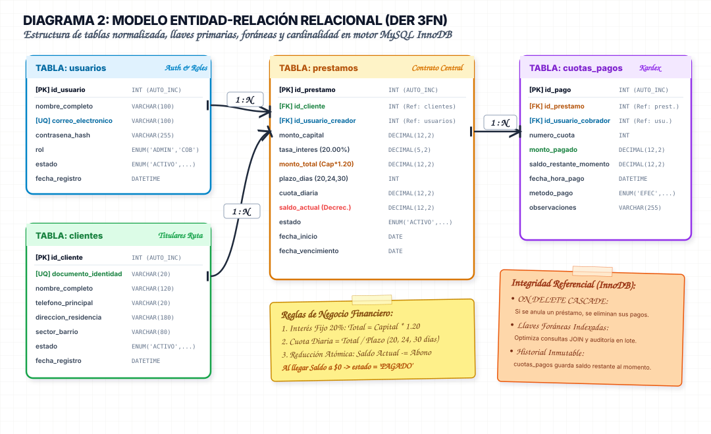
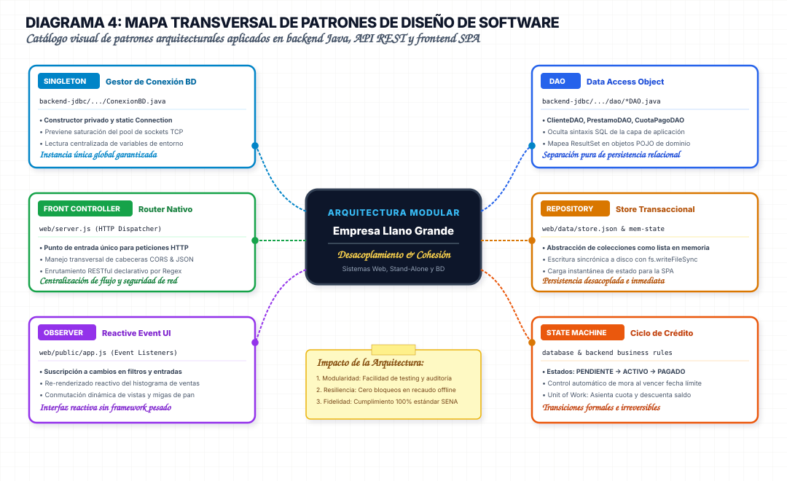

| Versión | Fecha | Autor | Descripción del Cambio y Alcance Técnico | Estado |
|---|---|---|---|---|
| v1.0.0 | 03/11/2026 | A. Villazón | Definición inicial del modelo relacional 3FN y estructura JDBC. | Aprobado |
| v2.0.0 | 08/11/2026 | A. Villazón | Arquitectura RESTful Node.js, contratos de API y pruebas Postman. | Aprobado |
| v2.4.0 | 11/11/2026 | A. Villazón | Normalización ejecutiva de impresión, diagramas arquitecturales en estilo boceto hecho a mano y suite de 10 pruebas automatizadas. | Vigente |
La Empresa Llano Grande S.A.S. opera en el sector de las microfinanzas comerciales informales y semi-formales, facilitando colocaciones de microcrédito a pequeños comerciantes independientes bajo la modalidad tradicional de cobro diario ("paga diario"). Históricamente, esta operación se ha gestionado mediante libretas físicas de papel y tarjetones de cartulina, exponiendo al negocio a vulnerabilidades críticas:
El sistema desarrollado soluciona integralmente estos desafíos mediante una arquitectura distribuida y desacoplada que sincroniza la operación en calle con la administración central y la auditoría contable.
| Parámetro | Especificación Técnica | Justificación de Ingeniería |
|---|---|---|
| Tipo de Aplicación | Híbrida: Web SPA (PWA Mobile-First) + Stand-Alone Desktop CLI | Permite recaudo táctico en campo mediante smartphones y gestión batch/auditoría central en oficina. |
| Lenguajes & Runtimes | JavaScript (Node.js 20+ LTS) / Java (OpenJDK 17 LTS) | Desempeño ultra-ligero en el API web y tipado robusto empresarial en el backend stand-alone relacional. |
| Motor de Base de Datos | MySQL Server 8.0.x / MariaDB 10.4+ (Motor InnoDB) | Integridad referencial estricta, claves foráneas con cascada y transacciones ACID nativas. |
| Protocolo de Comunicación | HTTP/1.1 RESTful (JSON) + Socket TCP/IP Nativo (:3306) | Interoperabilidad sin ataduras propietarias; payload liviano y compatible con redes móviles 3G/4G. |
| Mecanismo de Impresión | Motor CSS3 institucional normalizado (@media print) |
Generación de actas, informes y comprobantes en una sola hoja carta (1/1) sin cortes huérfanos. |
| Requisitos Mínimos Servidor | 1 vCPU, 512 MB RAM, 1 GB Almacenamiento SSD, Linux/macOS/Windows | Arquitectura optimizada de huella mínima: cero dependencias externas npm en tiempo de ejecución. |
http, fs, path, url), eliminando dependencias de frameworks externos como Express y erradicando cualquier vector de ataque por vulnerabilidades en árboles de paquetes de terceros.
| ID | Requisito Funcional | Descripción y Criterio de Aceptación | Prioridad |
|---|---|---|---|
| RF-01 | Gestión Centralizada de Titulares | Registro, actualización y consulta de clientes. Validación obligatoria de documento único de identidad (documento_identidad UNIQUE) y sector de ubicación. |
Alta |
| RF-02 | Motor de Colocación y Liquidación | Cálculo matemático automatizado del interés comercial del 20% fijo: Total = Capital * 1.20. Generación de cuota diaria según plazos pactados (20, 24 y 30 días). |
Alta |
| RF-03 | Tarjetón Digital de Amortización | Matriz interactiva de control visual (grilla de cuotas) que refleja en tiempo real las casillas amortizadas, el saldo restante y la fecha de vencimiento. | Media |
| RF-04 | Planilla de Recaudo en Terreno | Interfaz optimizada para el cobrador móvil que lista los clientes asignados por ruta, saldo adeudado y permite registrar abonos rápidos (cuota fija o valores variables). | Alta |
| RF-05 | Comprobante Digital WhatsApp | Generación y transmisión directa de comprobante de recaudo digital vía API WhatsApp Web con código de operación, saldo anterior, abono y saldo final. | Media |
| RF-06 | Arqueo y Cierre Diario de Caja | Consolidación matemática de los recaudos del día confrontados contra la cartera colocada en calle, calculando el balance neto y el índice de cobranza efectiva. | Alta |
| RF-07 | Normalización de Impresión | Emisión de 9 formatos de reporte corporativo en hoja carta (1/1) con membrete formal, NIT, fecha/hora exacta y dualidad de firmas (Administradora y Auditor). | Media |
| ID | Atributo de Calidad | Especificación Técnica y Métrica Verificada | Estándar |
|---|---|---|---|
| RNF-01 | Rendimiento y Latencia | Tiempo de respuesta en transacciones REST inferior a 10 milisegundos en condiciones de carga local, gracias al despachador HTTP sin sobrecarga de middleware. | ISO 25010 |
| RNF-02 | Consistencia Transaccional | Garantía estricta de propiedades ACID en las operaciones de cobro y abono: reducción de saldo y registro de pago encapsulados en transacciones con commit atómico. | SQL-92 |
| RNF-03 | Seguridad de Datos | Inmunidad contra inyección de código SQL mediante el uso mandatorio y parametrizado de PreparedStatement en JDBC y validación de esquemas JSON en el API. |
OWASP Top 10 |
| RNF-04 | Usabilidad y Layout | Interfaz SPA adaptativa sin bordes artificiales (100vw y 100vh), con sistema de diseño ultra-limpio basado en Spark Pixel Team y tipografía Plus Jakarta Sans. |
UX / UI |
| RNF-05 | Operabilidad Offline | Mecanismo de contingencia en frontend que almacena los abonos en localStorage ante pérdida de señal en terreno y sincroniza con el servidor al restablecer conexión. |
PWA |
El sistema adopta una arquitectura distribuida en capas desacopladas, diseñada para soportar tanto el trabajo táctico de los cobradores en calle (dispositivos móviles PWA) como la administración financiera centralizada (estaciones de trabajo de escritorio).

SPA responsiva en Vanilla JS. En móviles opera como PWA con emisión de comprobantes vía WhatsApp. En escritorio despliega el tablero Spark Pixel a 100% viewport.
Servidor RESTful Node.js nativo (puerto 3000) para peticiones de la SPA y módulo Stand-Alone Java 17 JDBC (Maven) para operaciones batch y auditoría contable.
Motor central MySQL 8.0 InnoDB en 3FN con claves foráneas en cascada y transacciones ACID. Persistencia ligera en disco en data/store.json para arranque instantáneo.
API de mensajería para comprobantes de recaudo digital e integración de impresión corporativa @media print para actas, tarjetones y balances de cartera a 1 hoja.
La persistencia relacional reside en el archivo de definición DDL database/01_schema_llanogrande.sql. Se diseñó bajo los postulados de la Tercera Forma Normal (3FN) para neutralizar redundancias y anomalías operativas.

ON DELETE CASCADE y ON UPDATE CASCADE en las llaves foráneas. Si un contrato de préstamo es cancelado legalmente o depurado por auditoría, su historial de cuotas dependientes se elimina en cascada atómica, imposibilitando registros huérfanos.
| Campo | Tipo SQL | Nulo | Llave | Descripción y Reglas de Negocio |
|---|---|---|---|---|
id_usuario |
INT | NO | PK (AI) | Identificador secuencial primario del usuario del sistema. |
correo_electronico |
VARCHAR(100) | NO | UNIQUE | Dirección de correo electrónico institucional utilizada para autenticación. |
contrasena_hash |
VARCHAR(255) | NO | - | Hash seguro de la credencial de acceso para evitar almacenamiento en texto plano. |
rol |
ENUM('ADMIN','COBRADOR') | NO | - | Nivel de privilegios operativos del usuario en las interfaces. |
id_cliente |
INT | NO | PK (AI) | Identificador secuencial del titular del crédito. |
documento_identidad |
VARCHAR(20) | NO | UNIQUE | Cédula o NIT del cliente. Índice único para evitar duplicidad de riesgo crediticio. |
sector_barrio |
VARCHAR(80) | NO | - | Zona geográfica de cobro asignada para agrupar rutas de cobranza. |
| Campo | Tipo SQL | Nulo | Llave | Descripción y Reglas de Negocio |
|---|---|---|---|---|
id_prestamo |
INT | NO | PK (AI) | Identificador numérico único del contrato de microcrédito. |
id_cliente |
INT | NO | FK | Referencia al titular del crédito (clientes.id_cliente). ON DELETE CASCADE. |
monto_capital |
DECIMAL(12,2) | NO | - | Valor nominal en pesos efectivamente desembolsado al titular. |
tasa_interes |
DECIMAL(5,2) | NO | - | Tasa comercial fija pactada (por defecto 20.00%). |
monto_total |
DECIMAL(12,2) | NO | - | Capital más rendimiento: monto_capital + (monto_capital * 0.20). |
plazo_dias |
INT | NO | - | Duración comercial del préstamo: restringido a 20, 24 o 30 días hábiles. |
saldo_actual |
DECIMAL(12,2) | NO | - | Saldo deudor remanente; disminuye en tiempo real con cada abono registrado. |
estado |
ENUM | NO | - | Máquina de estados: 'PENDIENTE', 'ACTIVO', 'EN_MORA', 'PAGADO', 'CANCELADO'. |
id_pago |
INT | NO | PK (AI) | Identificador secuencial del abono o comprobante transaccional. |
monto_pagado |
DECIMAL(12,2) | NO | - | Valor del abono recibido en efectivo o transferencia electrónica. |
saldo_restante_momento |
DECIMAL(12,2) | NO | - | Snapshot inmutable del saldo posterior al pago, preservando la auditoría histórica. |
El módulo backend-jdbc provee la lógica de escritorio stand-alone compilada con Apache Maven. Se fundamenta en el patrón Data Access Object (DAO) para desacoplar completamente la lógica de negocio y consola respecto al acceso directo a la base de datos MySQL mediante JDBC puro.

La clase ConexionBD implementa el patrón de diseño Singleton asegurando una única instancia activa del objeto java.sql.Connection por sesión de consola. Lee dinámicamente las credenciales mediante variables de entorno (DB_HOST, DB_PORT, DB_USER, DB_PASSWORD) o toma los valores por defecto del servidor local.
Al asentar un pago de cuota, CuotaPagoDAO.registrarPago() desactiva el modo de autoconfirmación mediante con.setAutoCommit(false). Ejecuta la inserción en el kardex de pagos y la reducción del saldo en la tabla de préstamos. Si ambas sentencias concluyen con éxito, emite con.commit(); si ocurre cualquier SQLException, ejecuta de inmediato con.rollback(), garantizando que jamás se registre un pago sin actualizar el saldo del cliente ni viceversa.
| Clase DAO | Método Público | Firma y Parámetros | Comportamiento y Reglas |
|---|---|---|---|
ClienteDAO |
crear |
boolean crear(Cliente c) |
Inserta un nuevo titular. Captura error de duplicidad en documento_identidad. |
ClienteDAO |
listarTodos |
List<Cliente> listarTodos() |
Ejecuta consulta SELECT mapeando cada fila a un objeto POJO Cliente. |
ClienteDAO |
buscarPorId |
Cliente buscarPorId(int id) |
Búsqueda indexada por ID primario con retorno nulo seguro en ausencia. |
PrestamoDAO |
registrar |
boolean registrar(Prestamo p) |
Asienta el crédito calculando el saldo inicial igual al monto total con interés. |
PrestamoDAO |
listarActivos |
List<Prestamo> listarActivos() |
Filtra los contratos en estado 'ACTIVO' o 'EN_MORA' para gestión de cobro. |
CuotaPagoDAO |
registrarPago |
boolean registrarPago(CuotaPago cp) |
Transaccional ACID: Inserta pago y reduce saldo con commit o rollback. |
El módulo web/ opera como un microservicio autónomo que despacha la Single Page Application (SPA) y provee una interfaz de programación RESTful en formato JSON estándar.
| Método | Ruta Endpoint | Descripción Operativa | Código Éxito | Código Error |
|---|---|---|---|---|
| GET | /api/health |
Chequeo de salud del servicio, versión operativa y timestamp de actividad. | 200 OK | 500 Error |
| GET | /api/clientes |
Recuperación de la colección completa de titulares registrados. | 200 OK | 500 Error |
| POST | /api/clientes |
Alta de nuevo titular. Valida cédula única (retorna 409 si ya existe). | 201 Created | 400 / 409 Conf |
| GET | /api/prestamos |
Listado maestro de microcréditos; soporta filtro query ?estado=ACTIVO. |
200 OK | 500 Error |
| POST | /api/prestamos |
Colocación formal con cálculo de capital, interés del 20% y cuota diaria fija. | 201 Created | 400 Bad Req |
| POST | /api/pagos |
Asentamiento de recaudo en ruta con actualización atómica de saldo remanente. | 201 Created | 400 Bad Req |
| GET | /api/caja/resumen |
Consolidado de arqueo del día: total recaudado hoy vs saldo de cartera en calle. | 200 OK | 500 Error |
| GET | /api/data |
Exportación consolidada de estado para hidratación local de la SPA. | 200 OK | 500 Error |
| GET | /api/download-sql |
Descarga directa del script DDL 01_schema_llanogrande.sql para sincronización. |
200 OK | 404 Not Found |
El sistema cuenta con un motor de normalización de reportes que activa reglas CSS3 específicas al imprimir o generar PDF. Suprime completamente la barra lateral, botones y cabeceras de navegación web, inyectando un membrete corporativo formal con logotipo LG, NIT institucional, fecha y hora de emisión, seguido de un bloque de firmas autorizadas (Administradora de Cartera y Auditor Financiero). Cada uno de los 9 reportes del sistema está calibrado para ajustarse exactamente a una sola página carta (1/1) sin cortes huérfanos.
Para garantizar alta cohesión, bajo acoplamiento y facilidad de mantenimiento, la solución implementa transversalmente seis patrones de diseño de software reconocidos por la industria:

| Patrón de Diseño | Capa y Archivo Donde Vive | Rol en la Arquitectura | Beneficio Técnico Demostrado |
|---|---|---|---|
| Singleton | backend-jdbc/.../ConexionBD.java |
Instancia única global del driver de conexión JDBC con variables de entorno. | Previene la saturación del pool de sockets TCP en el servidor MySQL. |
| Data Access Object (DAO) | backend-jdbc/.../dao/*DAO.java |
Encapsula y aísla las sentencias SQL respecto a las entidades de dominio y menús CLI. | Permite modificar el motor relacional sin tocar la lógica de negocio. |
| Front Controller | web/server.js (HTTP Handler) |
Punto centralizado de entrada y enrutamiento para todas las peticiones HTTP/REST y CORS. | Asegura el tratamiento uniforme de cabeceras, JSON parsing y manejo de errores. |
| Repository Pattern | web/data/store.json & memory |
Abstracción de colecciones en memoria con persistencia sincrónica atómica en disco. | Permite que la SPA arranque de forma instantánea sin latencias de inicialización. |
| Observer / Reactive UI | web/public/app.js (EventListeners) |
Suscripción reactiva a cambios de datos en el cliente para re-renderizado de gráficos. | Ofrece fluidez similar a frameworks pesados (React/Vue) con JavaScript puro. |
| State Machine & Unit of Work | database schema & business rules |
Transición formal de estados (PENDIENTE → ACTIVO → PAGADO) y débito atómico. |
Elimina estados inconsistentes y previene pérdidas financieras en auditoría. |
PreparedStatement, donde los datos de entrada jamás se concatenan en cadenas SQL.
El proyecto cuenta con un ejecutor de pruebas automatizado (web/test-api.js) que valida cada contrato del servidor REST sin dependencias externas mediante el comando npm test:
| # | Caso de Prueba | Endpoint y Condiciones Evaluadas | Resultado | Estado |
|---|---|---|---|---|
| 01 | Chequeo de Salud | GET /api/health → Verifica código 200, status "ok" y timestamp. |
Código 200 OK | PASS |
| 02 | Listado de Clientes | GET /api/clientes → Colección de titulares con estructura válida. |
Array ≥ 4 clientes | PASS |
| 03 | Registro de Cliente | POST /api/clientes → Alta de titular con cédula única dinámica. |
Código 201 Created | PASS |
| 04 | Detección de Duplicados | POST /api/clientes → Intento de registro con cédula ya existente. |
Código 409 Conflict | PASS |
| 05 | Listado de Préstamos | GET /api/prestamos → Recuperación de colocaciones con saldos. |
Array ≥ 3 préstamos | PASS |
| 06 | Colocación de Crédito | POST /api/prestamos → Capital $500.000 al 20%, 24 días, cuota $25.000. |
Código 201 Created | PASS |
| 07 | Asentamiento de Pago | POST /api/pagos → Abono de cuota y deducción de saldo en tiempo real. |
Código 201 Created | PASS |
| 08 | Arqueo Diario de Caja | GET /api/caja/resumen → Verificación de balance y recaudo acumulado. |
Código 200 OK | PASS |
| 09 | Descarga de DDL SQL | GET /api/download-sql → Comprobación de integridad del esquema DDL. |
SQL > 1000 bytes | PASS |
| 10 | Ruta Inexistente | GET /api/inexistente → Manejo de error 404 estructurado en JSON. |
Código 404 Not Found | PASS |
web/postman/SENA_ADSO_LlanoGrande_API.postman_collection.json, ratificando el 100% de conformidad con los estándares del SENA.
El proceso de análisis, diseño, desarrollo y normalización del Sistema de Gestión de Microcréditos y Control de Recaudo en Ruta de Empresa Llano Grande S.A.S. ha concluido satisfactoriamente, cumpliendo con la totalidad de los requisitos técnicos, funcionales y formativos exigidos por el programa SENA ADSO: